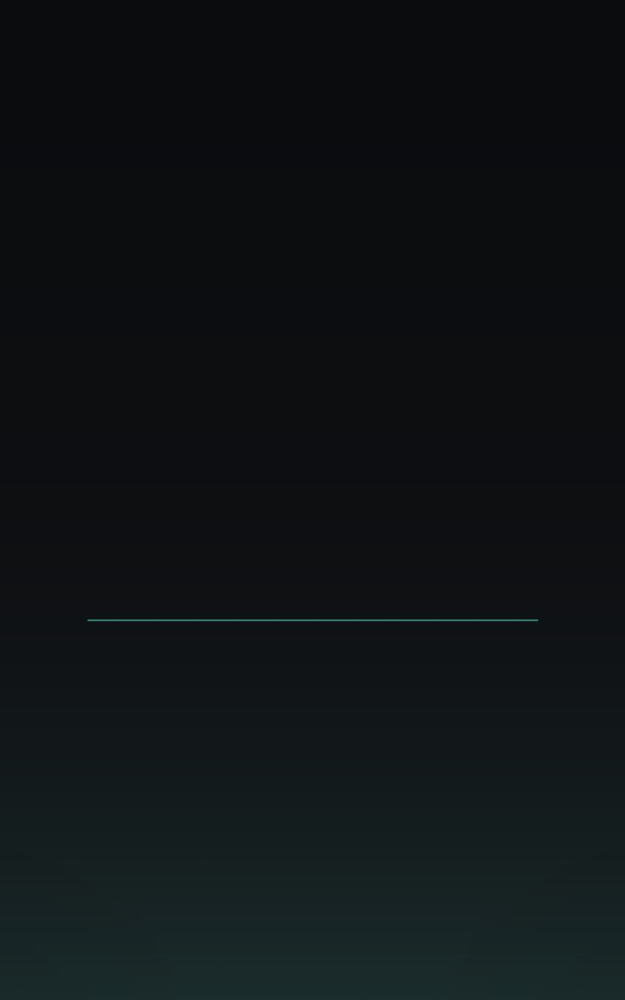

The Vanishing
Звёзды гаснут. Без вспышек. Без остатков. Кто-то должен пойти и посмотреть.
Их вселенная была телом. Тело умирает. Рядом делает первый вдох что-то новое.

Чёрная дыра никогда не была могилой — это устье протока, пора в коже, и кожа принадлежит живому. Сорок дней «Зонд» идёт его горлом: десятая доля светового года живой тьмы, тканевые своды размером с луны, реки-просветы с перистальтикой, органы, прочитанные неверно, а затем верно — приборами, которые не лгут. Ива Ленарт идёт этим путём вслед за телом мужа: Амаду ушёл в эту тьму раньше корабля. Снаружи ждёт финальный масштаб трилогии: выдохнутые остатки человечества стоят на внешней поверхности существа, бывшего их космосом, в виду новорождённой вселенной, делающей первый вдох, — и решают, что живые должны умирающему. И что кто-либо должен нерождённому.
Ещё не в продаже. Линия времени ещё оседает.